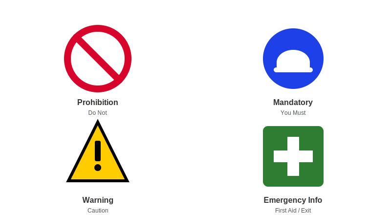

Construction sites are dynamic environments with many potential hazards. You must be able to identify them. Key examples include:
Working at Heights: Any work where a person can fall from one level to another. This includes working on ladders, scaffolds, roofs, or near open edges.
Electricity: Contact with overhead power lines, underground cables, or faulty electrical equipment.
Slips, Trips, and Falls: Caused by obstructions, trailing cables, wet surfaces, or poor housekeeping.
Manual Handling: Lifting, pushing, pulling, or carrying loads, which can lead to musculoskeletal injuries.
Hazardous Materials & Dust: Exposure to asbestos, silica dust (from cutting concrete, bricks, tiles), lead, and various chemicals.
Noise: High noise levels from machinery and power tools can cause permanent hearing damage.
High-Risk Work: Specific activities that require a special licence, such as operating certain types of cranes, forklifts, or erecting scaffolding above 4 metres.
Safety Communication & Reporting
Effective communication is essential for a safe site. Everyone must know what is going on and feel comfortable speaking up about safety issues.
Site Induction: This is your formal introduction to a new worksite. It covers site-specific rules, hazards, emergency procedures, and key personnel.
Toolbox Talks: Short, informal safety meetings, usually held weekly or before a specific task, to discuss relevant hazards and controls.
Safety Data Sheets (SDS): Documents that provide critical information about hazardous chemicals, including health effects, first aid measures, and storage requirements. An SDS must be available for every hazardous chemical on site.
Safety Signs and Symbols: These provide clear, visual warnings and instructions. You must understand their meaning. They are categorised by colour and shape:
Red Circle with a Slash: Prohibition (Do Not Do Something).
Blue Circle: Mandatory (You Must Do Something, e.g., Wear a Hard Hat).
Yellow Triangle: Warning (Caution, Hazard Ahead).
Green Square: Emergency Information (e.g., First Aid, Emergency Exit).

Safety sign categories: Prohibition, Mandatory, Warning, Emergency Information
Reporting: You have a duty to immediately report any hazards, incidents, or near misses to your supervisor. This allows for prompt action to be taken to prevent a recurrence.